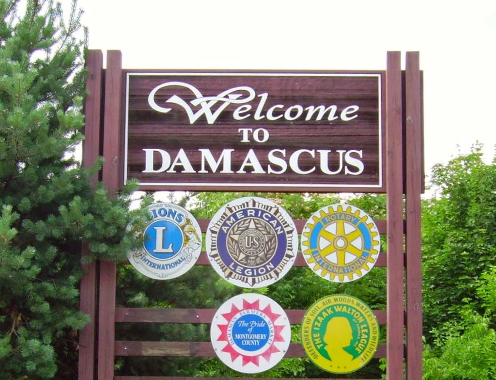
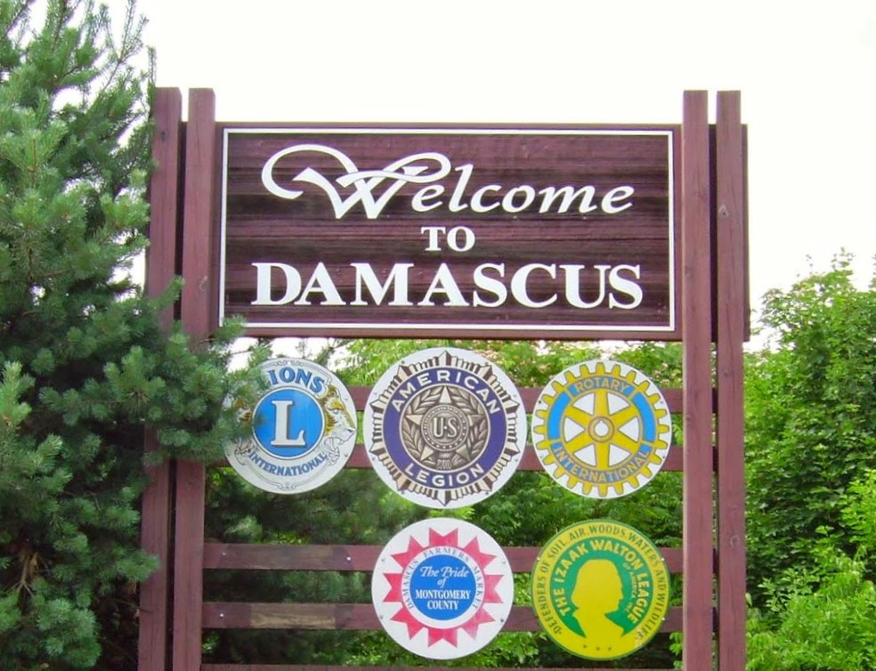
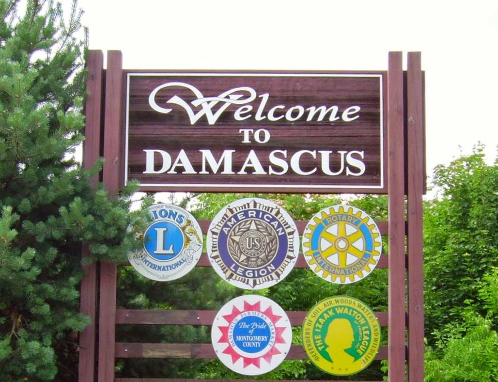
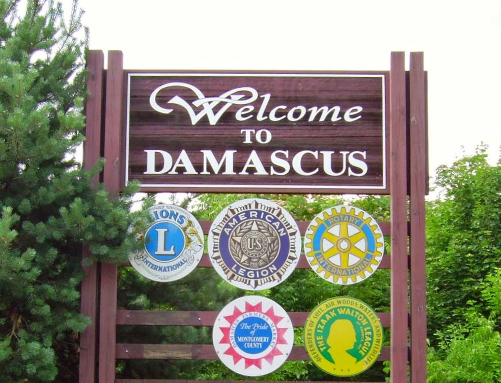

 


The hard surface trail is made of both asphalt and boardwalk. As it follows the Magruder Branch stream valley, the 4.2-mile trail offers views of the surrounding upland forests and provides wonderful birding opportunities. The boardwalk sections of the trail span the stream and associated wetland areas. The natural surface trail heads south just outside Magruder Recreation Park continuing down the Magruder Branch Stream Valley. The trail becomes the Seneca Creek Greenway Trail south of Watkins Road.
Damascus Neighborhood Park offers a playground and basketball court. M-NCPPC acquired this 1.7-acre park in 1970. This park is maintained without the use of pesticides.
"We offer 2 or 3 hour guided trail rides in the beautiful Patuxent River State Forrest(intermediate to experience riders only). The 3 hour ride includes lunch on the trail at no additional cost. The guided rides are $45 per hour per person, minimum 2 hours. 3 hour rides are $40 per hour. Numerous and varied trails are available so repeat customers can ride and not see the same scenery twice. Bring your own horse, if you like, and spend the day riding for only $25 for all day. We're open 7 days a week all year."